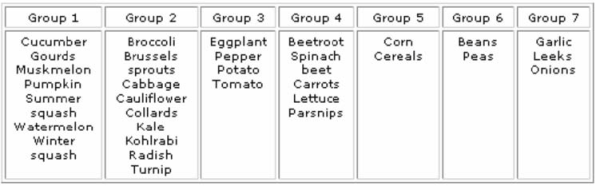

{kind=link}
{kind=link}
Introduction
Crop rotation is a practice of growing different crops on the same land in a regular recurring sequence. It means the planned order of specific crops planted on the same field. It also means that the succeeding crop belongs to a different family than the previous one. The planned rotation may vary from 2 or 3 years to longer period. Rotation of crops is not only necessary to offer a diverse "diet" to the soil microorganisms, but as they are rooting at different soil depths hence are capable to explore the different soil layers for nutrients. Nutrients that have been leached to deeper layers and that are no longer available for the commercial crop can be "recycled" by the crops in rotation. This way the rotation crops function as biological pumps. Furthermore, a diversity of crops in rotation leads to a diverse soil flora and fauna, as the roots excrete different organicsubstances that attract different types of bacteria and fungi, which in turn, play an important role in the transformation of these substances into plant available nutrients. The most important reason of crop rotation is to hinder the development of weeds, arthropod pests and short-persistent soil-borne diseases by reducing their population levels in the soil.
Many of the pests and diseases that plague vegetable plants live in the soil. A common source of soil-borne problems is the seedbed. If a farmer has a problem with his or her seedbed it may mean that plants are infected/infested very early and never have a chance to thrive. Often seedbeds are drenched with pesticide to prevent this.
Another and more common source of soil-borne pest and disease infection is the main production field itself. If a farmer grows crops in the same category year after year on the same land an almost certain result is a build up of pest and disease problems.
Effects of crop rotation
- Higher diversity in plant production and thus in human and livestock nutrition
- Reduction and reduced risk of pest and weed infestations
- Greater distribution of channels or biopores created by diverse roots (various form, size and depths)
- Better distribution of water and nutrients through the soil profile
- Exploration for nutrients and water of the whole soil profile by roots of many different plant species resulting in an optimal use of the available nutrients and water
- Increased nitrogen fixation through certain plant-soil biota symbionts and improved balance of N/P/K from both organic and mineral sources
- Increased humus formation
Means and practices of crop rotation
- Crop rotation plan/design should be guided by the set objectives i.e. food and fodder production (grain, leaf, stalks), residue production, pest and weed control, nutrient uptake and biological subsurface mixing/cultivation, etc.
- For better result; appropriate/improved seeds as well as high residue production of above ground and below-ground biomass.
Advantages or benefits of crop rotation
- It improves the soil structure and reduces depletion/erosion: Some crops have strong, deep roots. They can break up hardpans, and tap moisture and nutrients from deep in the soil. Others have many fine, shallow roots. They tap nutrients near the surface and bind the soil. They form many tiny holes so that air and water can get into the soil.
- It increases soil fertility: Legumes (such as groundnuts and beans) fix nitrogen in the soil. When their green parts and roots rot, this nitrogen can be used by other crops such as maize. The result is higher, more stable yields, without the need to apply expensive inorganic fertilisers.
- It helps control weeds, pests and diseases hence reduce reliance on synthetic chemicals: Planting the same crop season after season encourages certain weeds, insects and diseases. Planting different crops breaks their life cycle and prevents them from multiplying.
- It produces different types of output: Growing a mix of grain, beans, vegetables and fodder means a more varied diet and more types of produce to sell.
- It reduces risk: A single crop may fail because of drought. It may be attacked by pests. Or its market price may be low when time comes to sell it. Producing several different crops reduces these risks.
- Crop rotation may also replace ploughing the soil since it helps aerate, the soil, recycles nutrients, and helps control weeds, pests and diseases hence perfectly fitting within the ideals of conservation agriculture.
- Intercropping, strip cropping and relay cropping bring many of the same advantages as rotation. Even so, it is a good idea to rotate crops even if you use these approaches.
Which crop should not be planted together or in rotation
The table below indicates which crops are in the groups that suffer from the same pest and disease problems and which should therefore not be planted in rotation.
Table; Crops in the same group should not be planted in rotation
|  |
| (c) University of Vermont Extension website
|
Record keeping is important
A well kept field record book is a great help in remembering which crop has in the past been grown in a particular plot within the field or farm. This is useful especially if the records also show past incidents of plant pests or diseases in each plot in the farm.
Most importantly is the role of crop rotation in the management of pest and disease problems in the soil. These problems in the soil can build up during the life of a susceptible crop. If the same crop or a similar type belonging to the same family is grown in the same field, it will suffer from the accumulated pests and diseases from the previous crop(s) and may not grow well. This can be avoided if the soil is left fallow (not cropped) for a while, or a different crop is planted which is tolerant or resistant to the particular pest or disease. Better still is to plant a crop from a different family which will not share a same complex of pests and diseases. This will result in decline of soil problems and the original crop can be grown successfully again.
Rotations to manage weeds
Rotations are also used to control weeds. Crops such as Irish potatoes and other root crops may generally have more weeds than cereal crops because there are good selective herbicides for cereal crops, so rotating with a crop which allows easy weed control gives farmers an opportunity to reduce the build up of weeds. Interestingly, before herbicides were introduced the cereals were generally troubled by weeds more than the root crops because mechanical weeding was easier in the latter.
Rotations to manage nematodes
A special example of rotation is used to manage nematodes, which can be a problem in light sandy soils. Some crops are less suitable hosts for the nematodes. Nematode numbers actually reduce through the season if such crops are planted. This allows the susceptible crop to be grown again in the soil after one or two years.